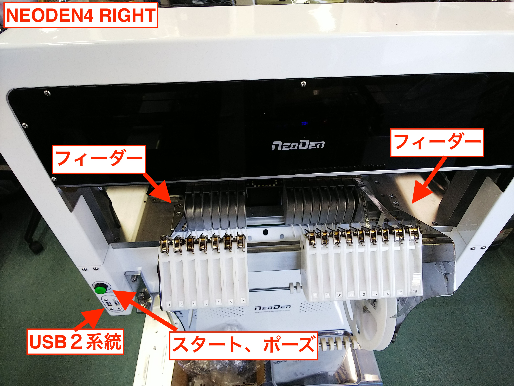
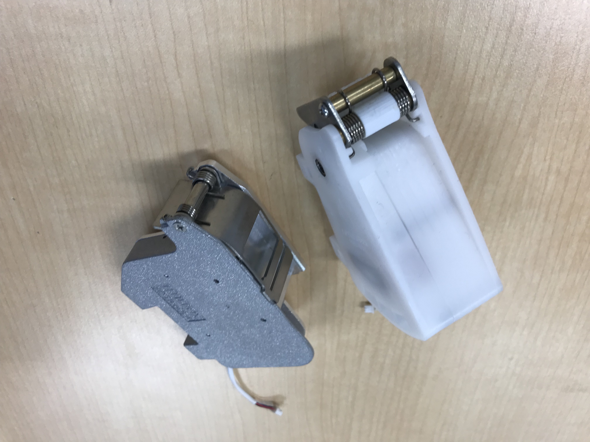

5.2 チップマウンタの各部の名称
Neoden４
誰にでもお求めやすい中国製チップマウンタ。一式１００万円ぐらい。
Neodenについて
2009年設立 デスクトップ型のチップマウンタを主力製品としている。日本にはまだ代理店がない。
Neoden４の各名称
パネライズした場合は、ベルトコンベアで実装
一枚基板の場合は、据え置いて実装



Neoden4では、フィーダーは2つに分割されおり、フィードボックス、ペールボックスと言います。
フィードボックスは、部品送り、ペールボックスは、皮を捲る役割を果たします。
USBは、キーボードマウスを繋げるためのものです。内部のメモリに保存できますが、外部のUSBメモリにプログラミングデータを保存することができます。

Neoden４のサンプル付属品
サンプルの基板が付属しています。様々なパッケージに対応し、レール幅など、参考に基板を作成するといいでしょう。

Neoden４のスペック
ヘッド数：4配置率：10000PCS / H
フィーダ容量：テープリールフィーダ：48テープ幅：8mm、12mm、16mm、24mm振動フィーダ：5
5000PCS / H
ICトレイ容量：5
ビジョン最小コンポーネントサイズ：0201最大コンポーネントサイズ：TQFP240
適用部品：0201、BGA、SOIC、SSOP、QFN、TQFP、LEDコンポーネント、ダイオード、三極管、タクトスイッチ
コンポーネントの高さ：最大5mm
分解能X / Y軸：0.01mm Z軸：0.1mm
回転：+/- 180（360）
位置決め精度：+/- 0.02mm
X-Y再現性：+/- 0.02mm
適用基板面積：310mm * 1500mm
配置場所：310 * 1500mm（ワッフルトレイなし）
プログラミング：ソフトウエア自動プログラミング/手動機械プログラミング
メインコントロール：GUI
電源：220V、50Hz（110Vに変換可能）
電源：180W
外形寸法：機械：87 * 68 * 48CM
パッキングサイズ：94 * 74 * 60CM
正味重量：60KGS
総重量：80kg
Neoden４の構成
ディスプレイ（アナログ対応品）、キーボード、マウス
ベルトコンベアで連結可能。